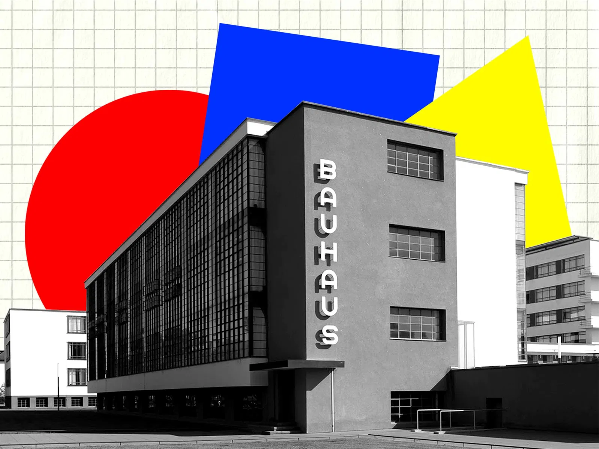
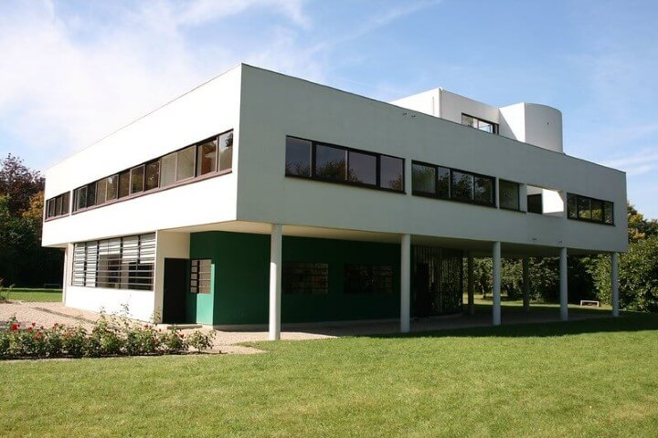
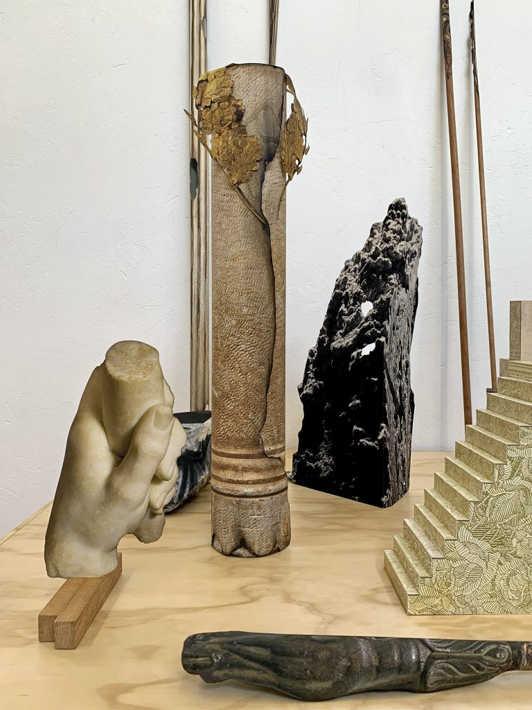

El impacto de Kazimir Malévich se extiende mucho más allá de su tiempo. Su visión del arte como una fuerza espiritual, desligada de la representación del mundo material, transformó radicalmente la historia del arte moderno y contemporáneo. El suprematismo no fue solo un estilo, sino una forma de pensar el espacio, el color y la existencia.
La influencia inmediata: el círculo suprematista
Tras la exposición de 1915, un grupo de artistas adoptó y expandió sus ideas. Entre ellos, El Lissitzky, Ilya Chashnik, Nikolái Suétin, Olga Rozanova y Lyubov Popova. Ellos llevaron el suprematismo a la arquitectura, la tipografía, el diseño textil y la escenografía. El Lissitzky, por ejemplo, con sus series Proun, tradujo las composiciones suprematistas al espacio tridimensional, sentando las bases del diseño constructivista.
Las escuelas de arte en Vítebsk y Moscú se convirtieron en laboratorios de experimentación visual donde la forma pura reemplazó al contenido narrativo. Esta etapa fue crucial para el desarrollo del arte abstracto en Europa.

El legado en la Bauhaus y el diseño moderno
En 1927, durante su estancia en Alemania, Malévich conoció las ideas de la Bauhaus y a su vez las influenció. La geometría esencial, la economía de formas y el ideal de un arte funcional resonaron en artistas como Kandinsky, Moholy-Nagy y Josef Albers.
El pensamiento suprematista anticipó los principios del diseño gráfico moderno y del arte industrial, influyendo en el estilo internacional y en el diseño de productos del siglo XX. El minimalismo visual, los planos puros de color y la búsqueda de una estética universal son herencias directas de su obra.
De la abstracción al minimalismo y el arte conceptual
A partir de los años 60, el arte occidental redescubrió a Malévich como precursor de la abstracción total. Artistas como Donald Judd, Robert Ryman, Yves Klein o Ad Reinhardt encontraron en el Cuadro negro el antecedente más radical del minimalismo: una obra sin figura, sin relato, solo presencia.
Su reflexión sobre el vacío y la espiritualidad también resonó en el arte conceptual, especialmente en las ideas de John Cage y Sol LeWitt, que veían en la reducción formal una vía hacia lo esencial.

Arquitectura y espacio moderno
Los arkhitektony de Malévich —maquetas blancas basadas en el equilibrio de volúmenes geométricos— inspiraron a generaciones de arquitectos modernos y contemporáneos. Su visión influyó en Le Corbusier, Zaha Hadid, Rem Koolhaas, e incluso en el movimiento Deconstructivista de finales del siglo XX.
La idea suprematista del espacio como energía dinámica se refleja en los edificios contemporáneos que priorizan la sensación, el ritmo y la relación con el vacío.
Cultura visual contemporánea
En el siglo XXI, las ideas de Malévich siguen vivas en el arte digital, el diseño de interfaces, la moda y la cultura visual. La simplificación extrema de la forma, el uso simbólico del color y la noción del “espacio infinito” aparecen en creaciones gráficas, animaciones y entornos virtuales.
La obra de Malévich ha sido reinterpretada por artistas contemporáneos como Anish Kapoor, Olafur Eliasson y Sarah Morris, quienes continúan explorando el diálogo entre forma pura y experiencia sensorial.
Más allá del arte
Su pensamiento también impactó la filosofía y la teoría del arte. Autores como Jean-François Lyotard o Gilles Deleuze vieron en el suprematismo una forma de “pensar lo impensable”, un arte que ya no representa, sino que produce presencia. En la era digital, el cuadrado negro puede leerse como un antecedente de la pantalla: un espacio donde todo puede surgir y desaparecer.
“El cuadrado negro no es el final de la pintura. Es el comienzo de una nueva sensibilidad.” — Kazimir Malévich
El legado de Malévich continúa expandiéndose. Cada generación encuentra en su obra una nueva forma de mirar el vacío, de entender la libertad y de transformar el pensamiento visual. Su cuadrado sigue brillando —no como símbolo del silencio, sino como puerta abierta hacia lo absoluto.